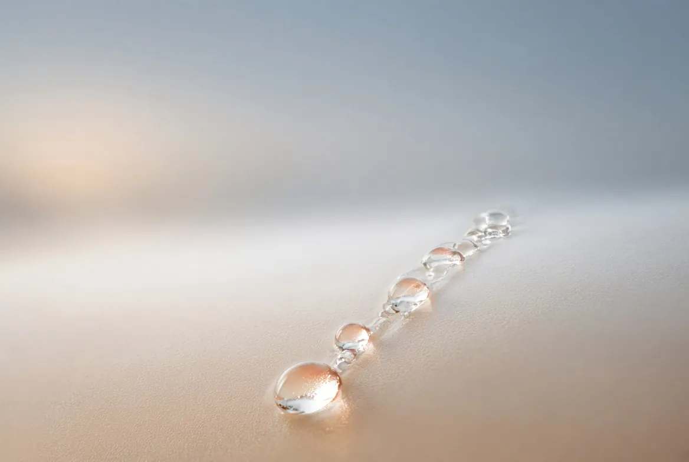

Drainage lymphatique
Doux, rythmé, léger.
Des mouvements lents, précis et répétitifs qui accompagnent la circulation de la lymphe et laissent une sensation de légèreté.
Le soin
Un geste qui suit le courant.
Le drainage lymphatique est un massage doux et rythmé. Par des mouvements lents, précis et répétitifs, il accompagne la circulation de la lymphe et procure une profonde sensation de légèreté corporelle.
Pratiqué en douceur, il offre un temps d'écoute corporelle et un retour à soi, dans un calme profond.
Il est souvent apprécié en cas de jambes lourdes, après une période de stress ou de fatigue, ou en complément d'une cure ou d'un jeûne.
Texte reformulé, à valider par BeatLes mentions « élimination des toxines », « réduit les œdèmes », « cellulite », « renforce le système immunitaire » et « récupération post-opératoire » ont été retirées ou encadrées.
Pour quels moments
Quand le corps se fait lourd.

Jambes lourdes
Après une longue journée debout ou assise, quand les jambes pèsent.
Après une période de stress
Un temps calme, rythmé, pour relâcher et souffler.
Grossesse, ménopause
Pendant un changement hormonal, avec l'accord de votre médecin ou de votre sage-femme.
Cure ou jeûne
En accompagnement d'une période de cure ou de jeûne.
Bon à savoir
Le drainage lymphatique proposé ici est un massage de bien-être. Il ne remplace pas un traitement médical. Après une opération, ou en cas de problème de santé, demandez d'abord l'avis de votre médecin.
Contre-indications à compléter par Beat